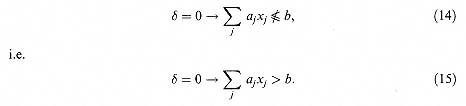

The following condition is fairly straightforward to formulate. We will therefore model it first:
(11) can be represented by the constraint
where M is an upper bound for the expression - b. It is easy to verify that (12) has the desired effect, i.e. when d = 1 the original constraint is forced to hold and when d = 0 no constraint is implied.
A convenient way of constructing (12) from condition (11) is to pursue the following train of reasoning. If d = 1 we wish to have - b<0, i.e. if (1 - d) = 0 we wish to have - b<0. This condition is imposed if
where M is a sufficiently large number. In order to find how large M must be we consider the case d = 0 giving - b<M.
This shows that we must choose M sufficiently large that this does not give an undesired constraint. Clearly M must be chosen to be an upper bound for the expression - b2. Rearranging the constraint we have obtained with the variables on the left we obtain (12).
We will now consider how to model the reverse of constraint (11), i.e.
This is conveniently expressed as

In dealing with the expression - b we run into the same difficulties that we met with the expression x > 0. We must rewrite
where e is some small tolerance value beyond which we will regard the constraint as having been broken. Should the coefficients aj be integers as well as the variables xj, as often happens in this type of situation, there is no difficulty as e can be taken as 1.